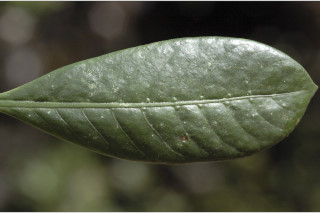
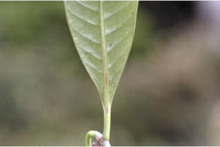
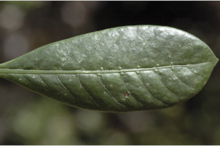
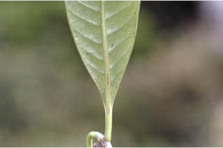

Large shrubs or small trees ca. 4 m tall.
ದೊಡ್ಡ ಗಾತ್ರದ ಪೊದೆಗಳು ಅಥವಾ ಅಂದಾಜು 4 ಮೀ. ಎತ್ತರದವರೆಗಿನ ಸಣ್ಣ ಗಾತ್ರದ ಮರಗಳು.
Large shrubs or small trees ca. 4 m tall.
பெரிய குத்துச்செடி அல்லது சிறிய மரம் 4 மீ. உயரம் வரை வளரக்கூடியது.
Bark grey, smooth; blaze white.
ತೊಗಟೆ ಬೂದು ಬಣ್ಣ ಹೊಂದಿದ್ದು ನಯವಾಗಿರುತ್ತವೆ;ಕಚ್ಚು ಮಾಡಿದ ಜಾಗ ಬಿಳಿ.
Bark grey, smooth; blaze white.
மரத்தின் பட்டை சாம்பல் நிறமானது, வழுவழுப்பானது; உள்பட்டை வெள்ளை நிறமானது.
Young branchlets subterete to compressed, glabrous.
ಎಳೆಯ ಕಿರುಕೊಂಬೆಗಳು ಉಪ ದುಂಡಾಗಿರುವುದರಿಂದ,ಸಂಕುಚಿತವಾಗಿರುವ ಮಾದರಿಯದಾಗಿದ್ದು ರೋಮರಹಿತವಾಗಿರುತ್ತವೆ.
Young branchlets subterete to compressed, glabrous.
சிறியநுனிக்கிளைகள் குறுக்குவெட்டுத் தோற்றத்தில் வளையமானது முதல் தட்டையானது, உரோமங்களற்றது.
Leaves simple, opposite, decussate; stipules intrapetiolar, sheathing, caducous and leaving scar; petiole 0.5-1.5 cm, planoconvex in cross section, glabrous; lamina 5-9 x 2-3.5 cm, obovate to oblanceolate, apex shortly and abruptly acuminate to acute, base attenuate - decurrent, margin entire and revolute, glabrous; midrib and secondary_nerves raised above; secondary_nerves 10-12 pairs, domatia present at the axils of secondary_nerves; tertiary_nerves broadly reticulate.
ಎಲೆಗಳು ಸರಳವಾಗಿದ್ದು ಕತ್ತರಿಯಾಕಾರದ ಅಭಿಮುಖ ಜೋಡನಾ ವ್ಯವಸ್ಥೆಯಲ್ಲಿರುತ್ತವೆ, ಕಾವಿನೆಲೆಗಳು ತೊಟ್ಟುಗಳ ನಡುವೆ ಇರುತ್ತವೆ,ಒರೆಯ ಸಮೇತವಿರುತ್ತವೆ ಹಾಗೂ ಉದುರಿದ ನಂತರ ಗುರುತುಗಳನ್ನು ಉಳಿಸುತ್ತವೆ;ತೊಟ್ಟು 0.5 –1.5 ಸೆಂ.ಮೀ.ವರೆಗಿನ ಉದ್ದವಿದ್ದು, ಅಡ್ಡ ಸೀಳಿದಾಗ ಸಪಾಟ ಪೀನ ಮಧ್ಯದ ಆಕಾರ ಹೊಂದಿದ್ದು,ರೋಮರಹಿತವಾಗಿರುತ್ತವೆ;ಪತ್ರಗಳು 5 -9 X 2 -3.5 ಸೆಂ.ಮೀ. ಗಾತ್ರ ಹೊಂದಿದ್ದು, ಬುಗುರಿಯಿಂದ ಬುಗುರಿ-ಭರ್ಜಿಯವರೆಗಿನ ಆಕಾರ ಹೊಂದಿದ್ದು, ಥಟ್ಟನೆ ಕ್ರಮೇಣ ಚೂಪಾಗುವುದರಿಂದ ಚೂಪಾದ ಮಾದರಿವರೆಗಿನ ತುದಿ, ಒಳಬಾಗಿದ - ತಳಭಾಗಕ್ಕೆ ವಿಸ್ತರಿಸಿದ ಬುಡ, ನಯವಾದ ಮತ್ತು ಹಿಂಸುರುಳಿಗೊಂಡ ಅಂಚು ಹೊಂದಿದ್ದು ರೋಮರಹಿತವಾಗಿರುತ್ತವೆ;ಮಧ್ಯನಾಳ ಮತ್ತು ಎರಡನೇ ದರ್ಜೆಯ ನಾಳಗಳು ಪತ್ರದ ಮೇಲ್ಭಾಗದಲ್ಲಿ ಉಬ್ಬಿರುತ್ತವೆ;ಎರಡನೇ ದರ್ಜೆಯ ನಾಳಗಳು 10 ರಿಂದ 12 ಜೋಡಿಗಳಿದ್ದು ಅಕ್ಷಾಕಂಕುಳಿನಲ್ಲಿ ಸೂಕ್ಷ್ಮ ಸಹಜೀವಿ ಗೂಡುಗಳ ಸಮೇತವಿರುತ್ತವೆ;ಮೂರನೇ ದರ್ಜೆಯ ನಾಳಗಳು ವಿಶಾಲ ಜಾಲಬಂಧ ನಾಳ ವಿನ್ಯಾಸದಲ್ಲಿರುತ್ತವೆ.
Leaves simple, opposite, decussate; stipules intrapetiolar, sheathing, caducous and leaving scar; petiole 0.5-1.5 cm, planoconvex in cross section, glabrous; lamina 5-9 x 2-3.5 cm, obovate to oblanceolate, apex shortly and abruptly acuminate to acute, base attenuate - decurrent, margin entire and revolute, glabrous; midrib and secondary_nerves raised above; secondary_nerves 10-12 pairs, domatia present at the axils of secondary_nerves; tertiary_nerves broadly reticulate.
இலைகள் தனித்தவை, எதிரடுக்கமானவை, குறுக்குமறுக்கானவை; இலையடிச்செதில் காம்புகளுக்கிடையே (இண்ட்ராபீட்டியோலார்) உடையது, தண்டிற்க்கு உறைப்போன்றது, எளிதில் உதிரக்கூடியது மற்றும் தழும்புகளை ஏற்படுத்துகின்றன; இலைக்காம்பு 0.5-1.5 செ.மீ., குறுக்குவெட்டுத் தோற்றத்தில் பிளேனோகான்வக்ஸ், உரோமங்களற்றது; இலை அலகு 5-9 X 2-3.5 செ.மீ., தலைகீழ் முட்டை வடிவானது முதல் தலைகீழ் ஈட்டி வடிவானது, அலகின் நுனி சிறிது குட்டையான அதிக்கூரியது முதல் கூரியது, அலகின் தளம் அட்டனுவேட்-டெக்கரண்ட், அலகின் விளிம்பு முழுமையானது மற்றும் பின்புறம் வளைந்து (ரெவலுட்) காணப்படும், உரோமங்களற்றது; மையநரம்பு மற்றும் இரண்டாம் நிலை நரம்புகள் அலகின் பரப்பைவிட உயர்ந்து இருக்கும்; இரண்டாம் நிலை நரம்புகள் 10-12 ஜோடிகள், டொமேசியா நரம்புகளின் கோணங்களில் உடையது; மூன்றாம் நிலை நரம்புகள் அகன்ற வலைப்பின்னல் போன்றவை.
Inflorescence terminal, in whorled branches terminating in cymes; flowers white, sessile.
ಪುಷ್ಪಮಂಜರಿಗಳು ತುದಿಯಲ್ಲಿರುತ್ತವೆ ಹಾಗೂ ಸುತ್ತು ಜೋಡನಾ ವ್ಯವಸ್ಥೆಯಲ್ಲಿರುವ ಕವಲುಗಳು ಮಧ್ಯಾರಂಭಿ ಮಂಜರಿಗಳಾಗಿ ಅಂತ್ಯಗೊಳ್ಳುವ ಮಾದರಿವುಗಳಾಗಿರುತ್ತವೆ; ಹೂಗಳು ಬಿಳಿಬಣ್ಣದವುಗಳಾಗಿದ್ದು,ತೊಟ್ಟುರಹಿತವಾಗಿರುತ್ತವೆ.
Inflorescence terminal, in whorled branches terminating in cymes; flowers white, sessile.
மஞ்சரி தண்டின் நுனியில் காணப்படும், மஞ்சரி கிளைத்தவை மற்றும் கிளைகள் சைம் வகை மஞ்சரியில் முடிவடைகின்றன; மலர்கள் வெள்ளை நிறமானது, காம்பற்றது.
Drupe, with two planoconvex pyrenes; seeds 1 per pyrene.
ಡ್ರೂಪ್ಗಳು ಅಂಡಾಕಾರದಲ್ಲಿದ್ದು ಸಪಾಟ ಪೀನ ಮಧ್ಯದ ಆಕಾರದ 2 ಪೈರೀನುಗಳನ್ನೊಳಗೊಂಡಿರುತ್ತವೆ; ಪ್ರತಿ ಪೈರೀನಿನಲ್ಲಿ 1 ಬೀಜವಿರುತ್ತದೆ.
Drupe, with two planoconvex pyrenes; seeds 1 per pyrene.
உள்ளோட்டுத்தசைகனி (ட்ரூப்), 2 பைரீன் உடையது; ஒவ்வொரு பைரீனிம் ஒர் விதையுடையது.


 


